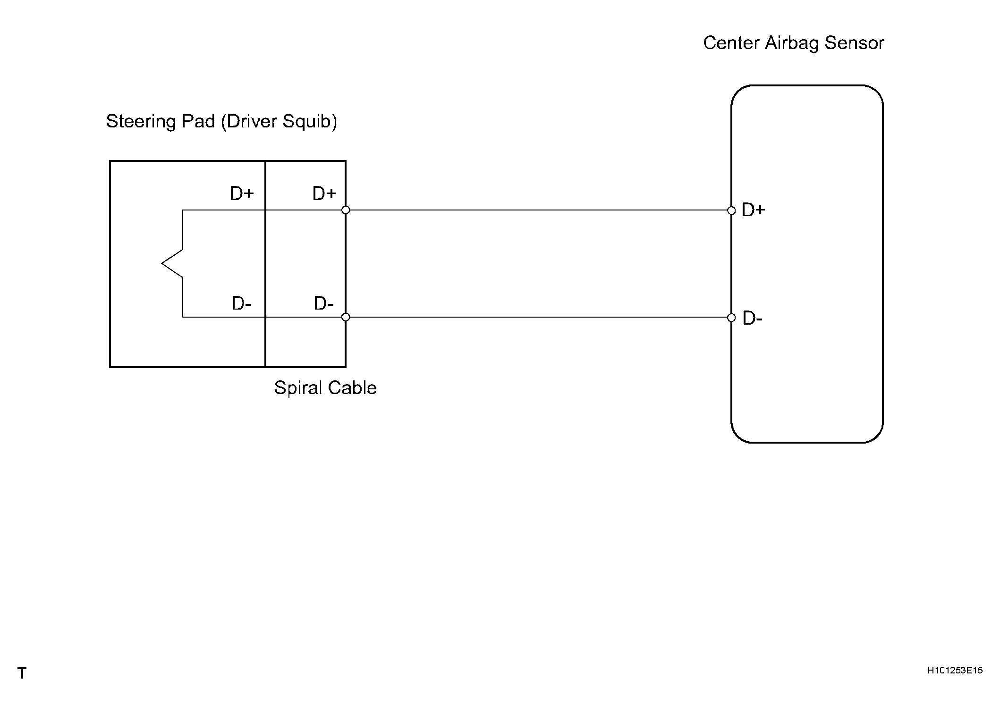

DTC B1800/51 Short in Driver Side Squib Circuit; DTC B1801/51 Open in Driver Side Squib Circuit; DTC B1802/51 Short to GND in Driver Side Squib Circuit; DTC B1803/51 Short to B+ in Driver Side Squib Circuit: Wiring Diagram

Courtesy of © TOYOTA, LICENSE AGREEMENT TMS1002